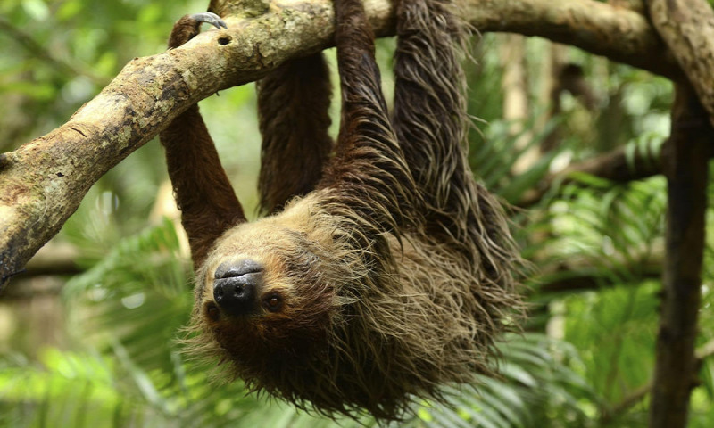
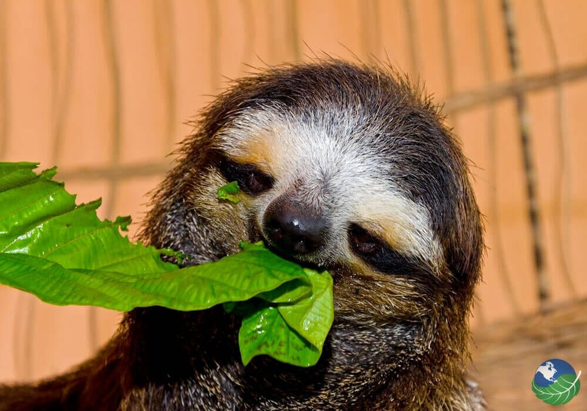
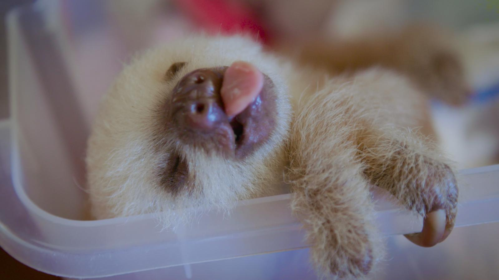
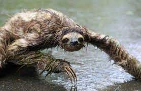
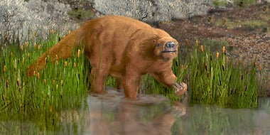

Életmódja

Fán élő, kizárólag levelekkel táplálkozó állatok, és kalóriaszegény étrendjüknek köszönhetően energiatakarékos életmódot választottak. Napi 9−10 órát alszanak, és amikor ébren vannak, jellegzetes testtartással, fejjel lefelé haladnak az ágakon, kb. 400 m-t téve meg óránként. A földön – ahova egyébként nagyon ritkán mászik le, hetente talán egyszer, akkor is üríteni – 250 m/h-s sebességgel kúszik, viszont alkalmanként vízbe is merészkedik, ahol sokkal gyorsabban képes úszni. Testhőmérsékletük szokatlanul alacsony az emlősök körében (30−34 °C aktív életmód során, és még alacsonyabb alvás közben).
Zsákszerű gyomrukban baktériumok segítik a levelek emésztését, és a táplálék akár egy hónapot is elidőzhet a lajhár emésztőrendszerében.
A lajhár szőrébe beletelepszik egy algafajta, amely a száraz évszakban barna, az esős évszakban zöld, így beleolvad a környező mohába és lombokba, és olyan, mint egy termesz- vagy mókusfészek, vagy egyszerűen a fa része lenne.
A lajhár lassú életmódja miatt a lassúság szinonimájává vált a köznyelvben, gyakori inaktív életvitelük miatt régebben azt hitték róluk, hogy pusztán a „levegőből élnek”.
Táplálkozása

Még ma is erdőségek borítják a szárazföldek jelentős részét, de évezredekkel-milliókkal ezelőtt sokkal inkább ez volt a helyzet. Ennek dacára maroknyi gerinces állatfajra jellemző, hogy a lombkoronát választotta volna állandó élőhelyéül és kizárólag levelekkel táplálkozik.
A lajhár talán a legismertebb közülük. Megmosolyogtatónak tartjuk álomkórosnak tűnő viselkedését, lassú mozdulatait, mókás külsejét. Egy új kutatás szerint ez a "lassított felvétel" stílus egyenes következménye annak, ahogy a faj egyedei alkalmazkodtak az ágak közötti élettérhez.
A környezethez jobban alkalmazkodott háromujjú lajhárok átlagos energiaigénye napi 460 kilojoule, azaz 110 kilokalória (1 kalória = 4,184 joule) volt. Ez körülbelül 160 grammnyi, azaz egy kisebb burgonyának felel meg. Ez a valaha mért legkisebb energiaszükséglet az emlősök körében.
A levelek tápanyagtartalma alacsony, ráadásul az állat bélcsatornájának hossza korlátozza a naponta elfogyasztható táplálék mennyiségét, ezért a lajhárnak meg kellett találnia a módját, hogyan hozza ki a legtöbbet a szűkös betevőből. Ezért lassult le az anyagcseréje, csökkent a testhőmérséklete, és vált lomhává a mozgása.
Szaporodása
 A hím 5, a nőstény 3-4 éves korban éri el az ivarérettséget. A párzási időszak valószínűleg március és április között van. A vemhesség 120-180 napig tart, ennek végén egy utód jön a világra. Az elválasztás egy hónap után következik be. A lajhárkölyök 8 hónapig marad az anyja mellett.
 (Wikipédia oldal)
(Wikipédia oldal)
Kétujjú lajhár |
Háromujjú lajhár |
Őslajhár |
|  |  |